Эталон задания 2.1.1 (6 с. о.)
При резонансе напряжений реактивные сопротивления конденсатора и индуктивной катушки:
Ом.
Ёмкость конденсатора С = 1/(2p fXC = 1/(314 × 45) = 70,8 мкФ.
Индуктивность катушки L = XL/2pf = 45/314 = 0,143 Гн.
Входное активное сопротивление цепи при резонансе:
Ом. Откуда  = 50 - R.
= 50 - R.
Активные сопротивления индуктивной катушки и реостата:
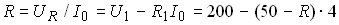. Откуда  = 4R = 40 Ом и R = 10 Ом.
= 4R = 40 Ом и R = 10 Ом.
Проверка: напряжение на зажимах индуктивной катушки
 B.
B.
Эталон задания 2.1.2 (4 с. о.)
Импульсная и переходная функции цепи по напряжению равны:
Согласно интегралу Дюамеля выходное напряжение
Для сравнения определим выходное напряжение операторным методом:

График выходного напряжения u2(t) представлен на рис. 2.1.2.
Указание. При выполнении заданий 2.5.2, 2.6.2, 2.7.2, 2.9.2, 2.10.1, 2.11.2, 2.13.2, 2.15.2, 2.16.2, 2.21.2, 2.23.1, 2.25.2, 2.28.2, 2.33.2, 2.44.1, 2.47.1, 2.49.2 воспользуйтесь приёмами, изложенными в эталоне задания 2.1.2.
Эталон задания 2.2.1 (6 c. о.)
Согласно общей формуле определения переходной величины в линейной электрической цепи с одним накопителем энергии ток
где (2) постоянная времени цепи t и коэффициент затухания а равны:
Установившийся ток
Согласно первому правилу коммутации ток

Ток
График тока iL(t) представлен на рис. 2.2.1.
Эталон задания 2.2.2 (4 c. о.)
Спектральная плотность прямоугольного импульса, симметричного относительно оси ординат,
Согласно теореме о суммировании спектров и теореме запаздывания спектральная плотность двойного прямоугольного импульса

Расчёт спектра представлен в табл. 2.2.1.
Таблица 2.2.2
|
w
tи, рад |
0 |
p
/4 |
p
/ 2 |
2p
/4 |
5p
/4 |
7p
/4 |
9p
/4 |
|
sinc(w
t и/2) |
1 |
0,974 |
0,9 |
0,784 |
0,47 |
0,139 |
-0,108 |
|
cos(w
t и) |
1 |
0,707 |
0 |
-0,707 |
-0,707 |
0,707 |
0,707 |
|
S (w
)×
100, Bc |
20 |
13,8 |
0 |
-11,09 |
-6,645 |
1,97 |
-1,53 |
На рис.2.2.2 изображена амплитудная спектральная диаграмма S(w) двойного прямоугольного импульса напряжения.
Указание. При выполнении заданий 2.18.2, 2.19.2, 2.24.2, 2.26.2, 2.30.2, 2.31.2, 2.34.2, 2.37.2, 2.39.2 и 2.45.2 воспользуйтесь приёмами, изложенными в эталоне задания 2.2.2.
Эталон задания 2.3.1 (5 с. о.)
Для расчёта А-коэффициентов четырёхполюсника воспользуемся уравнениями А-формы:
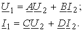
При холостом ходе (I2 = 0) коэффициенты А и С равны:
где входное сопротивление 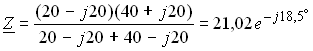Ом.
При коротком замыкании (U2 = 0) коэффициенты В и D равны:

Проверка расчёта коэффициентов

Характеристическое сопротивление
 Ом.
Ом.
Указание. При выполнении заданий 2.14.1, 2.31.1, 2.35.2, 2.36.2, 2.38.1, 2.40.2, 2.42.1, 2.43.1, 2.45.1 воспользуйтесь приёмами, изложенными в эталоне задания 2.3.1.
Эталон задания 2.3.2 (5 с. о.)
Комплексный ряд Фурье периодического сигнала
u(t) =
где коэффициенты
где w1Т = 2p
, = 2jsinkw1Т/2 = 2jsinkp= 0;
 =2coskw
1Т/2 = 2coskp.
=2coskw
1Т/2 = 2coskp.
Итак, коэффициенты комплексного ряда Фурье
 =
=
Комплексный ряд Фурье
u(t) = 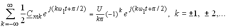
Амплитудный спектр комплексного ряда Фурье сигнала u(t) представлен на рис. 2.3.2.

Определим переходный ток iС операторным методом. При замыкании ключа К изображение тока
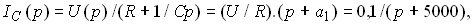
где  =5000 1/с - коэффициент затухания переходного процесса;
=5000 1/с - коэффициент затухания переходного процесса;
 - постоянная времени цепи при замыкании ключа К.
- постоянная времени цепи при замыкании ключа К.
Воспользовавшись таблицей перехода от изображений к оригиналам функций, получим переходный ток iС (рис. 2.4.1, б)

Операторная схема замещения цепи при размыкании ключа К представлена на рис. 2.4.1, а.
Операторный ток  при размыкании ключа К
при размыкании ключа К

где  = U = 10 В;
= U = 10 В;
 2500 1/с - коэффициент затухания переходного процесса в цепи;
2500 1/с - коэффициент затухания переходного процесса в цепи;
 - постоянная времени цепи при размыкании ключа К.
- постоянная времени цепи при размыкании ключа К.
Ток iС (см. рис. 2.4.1, б) при размыкании ключа К

Указание. При выполнении заданий 2.8.1, 2.9.1, 2.25.1, 2.27.1, 2.34.1, 2.35.1, 2.37.1, 2.38.2, 2..40.1 и 2.50.2 воспользуйтесь приёмами, изложенными в эталонах заданий 2.2.1 и 2.4.1.
Эталон задания 2.4.2 (6 с. о.)
Вначале рассчитаем спектральную плотность S(jw) одиночного сигнала s(t), разложив его на составляющие s1, s2, s3 и s4 (рис. 2.4.2.1, а), а затем определим коэффициенты комплексного ряда Фурье периодической последовательности сигнала s(t).
Согласно теореме о суммировании спектров и теореме запаздывания спектральная плотность импульса

где 

Заменив w = kw
1 и w1Т = 2p, осуществим переход к коэффициентам комплексного ряда Фурье периодического сигнала по формуле


Так как
то коэффициенты


Амплитудный спектр периодического сигнала s(t) (рис. 4.4.2.2)

Указание. При выполнении заданий 2.10.2, 2.12.2, 2.27.2, 2.29.2, .42.2 воспользуйтесь приёмами, изложенными в эталонах заданий 2.3.2 и 2.4.2.
Эталон задания 2.5.1 (7 с. о.)
Вначале определим входное операторное сопротивление цепи
При С = 100 мкФ,  т. е. от частоты не зависит.
т. е. от частоты не зависит.
При С = 6,25 мкФ, 
Заменив р = jw, получим комплекс входного сопротивления

Откуда амплитудно-частотная характеристика (АЧХ)

и фазо-частотная характеристика (ФЧХ) j(w
) входного сопротивления цепи, где k = w/wp;
= 104рад/c.
Расчёт значений Z(w) и j(w), приведен в табл. 2.5.1.
На рис. 2.5.1 изображена АЧХ и ФЧХ входного сопротивления цепи.
Таблица 2.5.1
|
k |
0 |
0,1 |
0,5 |
1 |
1,5 |
2 |
4 |
10 |
¥
|
|
j
, град |
0 |
8,5 |
5,68 |
0 |
-3,35 |
-5,75 |
-10 |
-8,5 |
0 |
|
Z , Ом |
8 |
8,64 |
11,2 |
11,53 |
8,8 |
11,2 |
9,92 |
8,64 |
8 |
Примечание. При k = 0,01, j = 1°; при k = 0,05, j
= 5°.
Указание. При выполнении заданий 2.7.1 и 2.44.2 воспользуйтесь приёмами, изложенными в эталоне задания 2.5.1.
Эталон задания 2.6.1 (5 с. о.)
Мгновенный ток i(t) цепи
где Z0 = R0 = 40 Ом;
Z1 =
Z3 =
Подставив полученные значения сопротивлений, получим

Действующее значение несинусоидального тока
Указание. При выполнении заданий 2.8.2, 2.29.1, 2.30.1 и 2.33.1 воспользуйтесь приёмами, изложенными в эталоне задания 2.6.1.
Эталон задания 2.11.1 (5 с. о.)
Изображение (по Лапласу) выходного напряжения цепи (рис. 2.11.1, а) при t = 0+
где 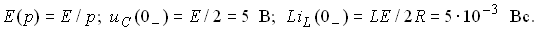
Корни характеристического уравнения  равны
равны

где a = 500 1/с и w с = 4500 рад/c - коэффициент затухания и угловая частота свободных колебаний переходных величин в цепи; t = 1/a = 2 мс; Тсв = 2p/wс » 1,4 мс.
После преобразования изображения напряжения  имеем
имеем
= 
Воспользовавшись таблицей перехода от изображений (по Лапласу) к оригиналам, получим выражение выходного напряжения цепи

График напряжения  изображён на рис. 2.11.1, б.
изображён на рис. 2.11.1, б.
Указание. При выполнении заданий 2.16.1, 2.17.2, 2.22.2 и 2.32.2 воспользуйтесь приёмами, изложенными в эталоне задания 2.11.1.
Эталон задания 2.12.1 (5 с. о.)
О характере переходного процесса в линейной электрической цепи можно судить по виду корней характеристического уравнения: если корни отрицательные и разные, то имеет место апериодический процесс; если они комплексно-сопряжённые с отрицательной вещественной частью, то имеет место колебательный затухающий процесс; наконец, отрицательным и равным корням отвечает критический апериодический процесс.
Характеристическое уравнение цепи получают, например, после записи и приравнивания к нулю входного операторного сопротивления цепи, т. е.
Так как корни характеристического уравнения цепи комплексно-сопряжённые, то имеет место колебательный процесс.
Для составления уравнений методом переменных состояния, запишем компонентные уравнения элементов цепи и уравнения законов Кирхгофа для мгновенных значений электрических величин, а затем выразим в явном виде производные тока iL(t)/dt и напряжения uC(t)/dt от переменных iL, uC и входного воздействия U:
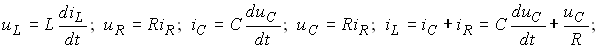

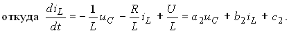
Коэффициенты уравнений метода переменных состояния цепи:

Указание. При выполнении задания 2.22.1 воспользуйтесь приёмами, изложенными в эталоне задания 2.12.1.
Эталон задания 2.13.1 (6 с. о.)
Активное сопротивление упрощенной схемы замещения трансформатора

где  и
и  - активное сопротивление первичной обмотки и приведенное к числу витков первичной обмотки сопротивление вторичной обмотки;
- активное сопротивление первичной обмотки и приведенное к числу витков первичной обмотки сопротивление вторичной обмотки;
n = E1/E2 » U1/U2 = 3 - коэффициент трансформации трансформатора.
Суммарные активные потери трансформатора при номинальной нагрузке равны сумме потерь в стали и в меди, т. е.
Активные потери в меди при номинальной нагрузке трансформатора

Номинальный первичный ток

Активное сопротивление первичной обмотки
Активное сопротивление вторичной обмотки

Эталон задания 2.14.1 (5 с. о.)
Передаточная функция цепи по напряжению

Заменив  , получим комплексную передаточную функцию цепи по напряжению
, получим комплексную передаточную функцию цепи по напряжению

Откуда амплитудно-частотная Hu(w) и фазо-частотная Yu(w) характеристики цепи по напряжению (АЧХ и ФЧХ):


где 
Расчёт АЧХ Hu(w) и ФЧХ Y
u(w) для удобства сведен в табл. 2.14.2.
Таблица 2.14.2
|
k |
0 |
0,25 |
0,5 |
1,0 |
2 |
3 |
4 |
¥
|
|
H u(w
) |
0 |
0,043 |
0,172 |
0,544 |
1,008 |
0,682 |
0,043 |
0 |
|
Y
u(w
) |
180°
|
163°
|
141°
|
90°
|
39°
|
24,7°
|
18°
|
0 |

Графики АЧХ Hu(w) и ФЧХ Y
u(w) цепи по напряжению изображены на рис. 2.14.2.
Указание. При выполнении заданий 2.20.2, 2.21.1, 2.23.2, 2.26.1, 2.28.1, 2.43.2, 2.46.1 и 2.48.2 воспользуйтесь приёмами, изложенными в эталоне задания 2.14.2.
Эталон задания 2.15.1 (4 с. о.)
Узловое напряжение цепи
где комплексные проводимости ветвей
После подстановки и преобразования имеем
Согласно обобщённому закону Ома ток во второй ветви
Указание. При выполнении заданий 2.17.1, 2.18.1, 2.19.1, 2.24.1, 2.32.1, 2.36.1, 2.39.1 и 2.41.1 воспользуйтесь комплексным методом расчёта цепи и приёмами, изложенными в эталоне задания 2.15.1.
2.20.1. Ответы: Z0 = 1000 Ом; R0 = 125 Ом; Х0 = 992 Ом; ZК = 6,4 Ом; 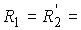1,6 Ом; ХК = 5,54 Ом;  2,27 Ом.
2,27 Ом.
Эталон задания 2.24.1 (5 с. о.)
При согласном включении индуктивных катушек ток  , где Z - комплекс полного сопротивления цепи, равный сумме комплексов полных сопротивлений катушек и двух комплексов сопротивлений взаимной индукции, т. е.
, где Z - комплекс полного сопротивления цепи, равный сумме комплексов полных сопротивлений катушек и двух комплексов сопротивлений взаимной индукции, т. е.
Ток  = 100/
= 100/ =
=
Напряжение 
Для построения векторной диаграммы напряжений и тока определим напряжения на остальных элементах цепи:

Векторная диаграмма напряжений и тока цепи изображена на рис. 2.24.1.
Эталон задания 2.41.2 (5 с. о.)
Дискретное преобразование Фурье сигнала 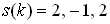

где 
N = 3 - период последовательности  .
.
Дискретное преобразование Фурье периодической последовательности с периодом N = 3
с периодом N = 3

где 

Дискретное преобразование Фурье свёртки  =*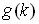 периодических последовательностей и с периодом N = 3
=*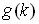 периодических последовательностей и с периодом N = 3
Круговая (периодическая) свёртка периодических последовательностей и

где
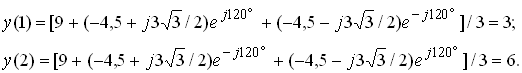
Эталон задания 2.46.2 (5 с. о.)
Взаимная корреляционная функция двух сигналов 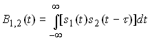.
При смещении сигнала s2(t) вправо от начала осей координат
При смещении сигнала s2(t) влево от начала осей координат

График функции приведен на рис. 2.46.2
Эталон задания 2.47.2 (4 с. о.)
Рекурсивный цифровой фильтр 1-го порядка (РФ) описывается разностным уравнением
Расчёт выходной последовательности y(k):
Импульсная функция РФ

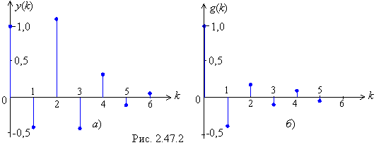
Графики выходной последовательности  и импульсной функции РФ изображены на рис. 2.47.2, а и б.
и импульсной функции РФ изображены на рис. 2.47.2, а и б.
Эталон задания 2.48.2 (4 с. о.)
Так как выходной и входной процессы связаны интегралом свёртки 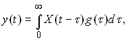 то по определению взаимной корреляционной функции

Импульсная функция цепи по напряжению (на конденсаторе)
где
Для белого шума корреляционная функция

Взаимная корреляционная функция равна

Эталон задания 2.49.2 (4 с. о.)
Полагая  , определим комплексную схемную функцию цифрового нерекурсивного фильтра 2-го порядка
, определим комплексную схемную функцию цифрового нерекурсивного фильтра 2-го порядка
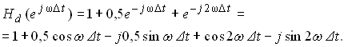
Модуль схемной функции (амплитудно-частотная характеристика) фильтра - периодическая функция частоты w с периодом, равным частоте дискретизации w
d = 2p/Dt:

Значения АЧХ фильтра:
при w = 0, Hd(0) = 2,06;
при w = p/2Dt, Hd(p/2Dt) = 0,5;
при w = p/Dt, Hd(p/Dt) = 1,5.
График АЧХ Hd(w) фильтра изображён на рис. 2.49.2.
Эталон задания 2.50.2 (4 с. о.)
Нерекурсивный цифровой фильтр 1-го порядка (НФ) описывается разностным уравнением

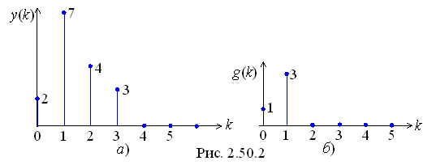
Расчёт выходной последовательности y(k) фильтра:
Импульсная функция НФ 1-го порядка
Графики выходной последовательности и импульсной функции НФ 1-го порядка изображены на рис. 2.50.2, а и б.